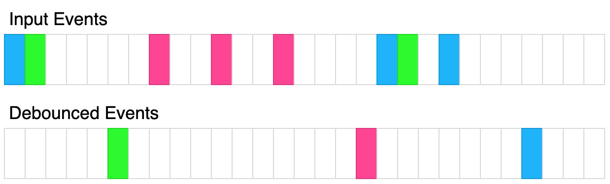

| Category | Difficulty | Likes | Dislikes |
|---|---|---|---|
| JavaScript | Medium | 473 | 56 |
Given a function fn and a time in milliseconds t, return a debounced version of that function.
A debounced function is a function whose execution is delayed by t milliseconds and whose execution is cancelled if it is called again within that window of time. The debounced function should also receive the passed parameters.
For example, let's say t = 50ms, and the function was called at 30ms, 60ms, and 100ms.
The first 2 function calls would be cancelled, and the 3rd function call would be executed at 150ms.
If instead t = 35ms, The 1st call would be cancelled, the 2nd would be executed at 95ms, and the 3rd would be executed at 135ms.

The above diagram shows how debounce will transform events. Each rectangle represents 100ms and the debounce time is 400ms. Each color represents a different set of inputs.
Please solve it without using lodash's _.debounce() function.
Example 1:
Input:
t = 50
calls = [
{"t": 50, inputs: [1]},
{"t": 75, inputs: [2]}
]
Output: [{"t": 125, inputs: [2]}]
Explanation:
let start = Date.now();
function log(...inputs) {
console.log([Date.now() - start, inputs ])
}
const dlog = debounce(log, 50);
setTimeout(() => dlog(1), 50);
setTimeout(() => dlog(2), 75);
The 1st call is cancelled by the 2nd call because the 2nd call occurred before 100ms
The 2nd call is delayed by 50ms and executed at 125ms. The inputs were (2).Example 2:
Input:
t = 20
calls = [
{"t": 50, inputs: [1]},
{"t": 100, inputs: [2]}
]
Output: [{"t": 70, inputs: [1]}, {"t": 120, inputs: [2]}]
Explanation:
The 1st call is delayed until 70ms. The inputs were (1).
The 2nd call is delayed until 120ms. The inputs were (2).Example 3:
Input:
t = 150
calls = [
{"t": 50, inputs: [1, 2]},
{"t": 300, inputs: [3, 4]},
{"t": 300, inputs: [5, 6]}
]
Output: [{"t": 200, inputs: [1,2]}, {"t": 450, inputs: [5, 6]}]
Explanation:
The 1st call is delayed by 150ms and ran at 200ms. The inputs were (1, 2).
The 2nd call is cancelled by the 3rd call
The 3rd call is delayed by 150ms and ran at 450ms. The inputs were (5, 6).
Constraints:
0 <= t <= 10001 <= calls.length <= 100 <= calls[i].t <= 10000 <= calls[i].inputs.length <= 10